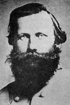

|

|

|
|
|
James Ewell Brown "J.E.B." Stuart was born in Patrick County,
Virginia, on February 6, 1833, the seventh of Archibald and
Elizabeth Letcher Pannill Stuart's ten children. Reared in
a family with excellent political and social connections but
relatively modest financial means, Stuart received schooling
in southwest Virginia before attending Emory and Henry
College in 1848-50. He entered the United States Military
Academy in 1850, graduating 13th of 46 members in the class
of 1854.
Commissioned a second lieutenant in the Mounted Rifles in
October 1854, he later was assigned to the 1st United States
Cavalry at Fort Leavenworth. While serving with that unit
on the Kansas frontier, Stuart was promoted to first
lieutenant in December 1855. By that time he had married
Flora Cooke, daughter of the post commandant at Leavenworth.
The couple would have three children. As a United States
officer, Stuart saw action against the Cheyenne at Solomon's
Fork in 1857, where he received a severe wound. He also
participated in peacekeeping duty in Kansas, where
pro-slavery forces contended with abolitionists and
free-soilers; and he took part in the capture of John Brown
at Harpers Ferry in October 1859. Stuart was promoted to
captain in April of 1861, but he resigned his commission the
next month and he soon held the rank of colonel in the
Confederate cavalry.
Stuart quickly made a name for himself as a flamboyant
and effective cavalry officer. At the head of the 1st
Virginia Cavalry, he led a dramatic charge at the battle of
First Bull Run. Promoted to brigadier general on September
26, 1861, he performed mundane duties until mid-June 1862,
when he earned renown with a daring reconnaissance that
included a ride around George B. McClellan's entire Army of
the Potomac. Typical of the Confederates who applauded
Stuart's ride was a Richmond woman who wrote of "the
brilliant, dashing exploits of General 'Jeb' Stuart and his
gallant horsemen," who "became, from that time, famous in
the annals of the war." Blessed with a famous nickname
inspired by his initials and often described as a romantic
cavalier, Stuart wore a scarlet-lined cape, boots that
reached his thighs, a pair of golden spurs, a bright yellow
sash, gauntlets of white buckskin, and a hat crowned with a
long plume. He was promoted to major general on July 25,
1862, and given command of all cavalry in Robert E. Lee's
Army of Northern Virginia, a post he held for the remainder
of his Confederate career.
Stuart's colorful image sometimes overshadowed his
mastery of cavalry operations. He played key roles in the
campaigns of Second Bull Run and Antietam, screening Lee's
movements, gathering intelligence about the Federals, and
riding around McClellan's army again in October 1862. At
the battle of Chancellorsville, he temporarily replaced the
wounded "Stonewall" Jackson at the head of the Second Corps,
acquitting himself well in the brutal offensive combat on
May 3, 1863. His most controversial moments came in June
and July of 1863. Surprised at Brandy Station, Virginia on
June 9, he barely managed to hold off aggressive Union
troopers. In the following Gettysburg campaign, he failed
Lee badly, losing touch with the Army of Northern Virginia
and leaving his commander to move blindly into Pennsylvania.
Stuart rebounded after Gettysburg, rendering solid work
against vastly improved Union cavalry during the autumn of
1863 and into the spring of 1864. His troopers fought well
in the opening scenes of the Overland campaign of May 1864.
As Lee and Ulysses S. Grant engaged at Spotsylvania, Stuart
moved to block a Union cavalry raid against Richmond, and he
received a mortal wound at the battle of Yellow Tavern on
May 11. As he was carried from the field, Stuart showed the
spirit that had made him an effective soldier. "I had
rather die," he said, "than be whipped!" He died in
Richmond on the morning of May 12. When told of Stuart's
fate, Lee remarked sadly, "He never brought me a piece of
false information."
Source: Joan Waugh, ed., Facts on File Encyclopedia of American
History: Civil War and Reconstruction, 1856 to 1869 (New York: Facts on
File, 2003), 340-341.
|